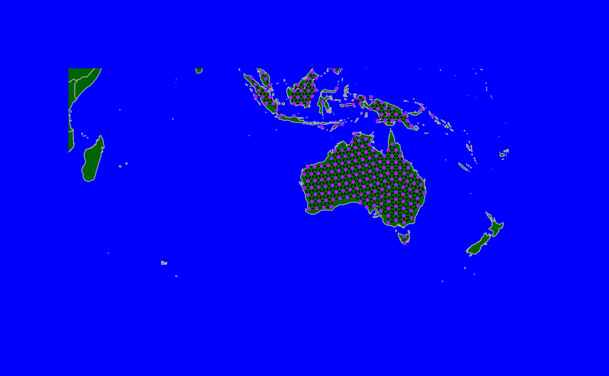

Various functions to plot a gGraph object: plot opens a
device and plot the object, while points plots the object on the
existing device. plotEdges only plots the edges of the graph: it can
be called directly, or via arguments passed to plot and
points.
Arguments
- x
a gGraph object.
- shape
a shapefile used as background to the object. Must be of the class
SpatialPolygonsDataFrame(seereadShapePolyin maptools package to import such data from a GIS shapefile). Alternatively, a character string indicating one shapefile released with geoGraph.- psize
a numeric giving the size of points.
- pch
a numeric or a character indicating the type of point.
- col
a character string indicating the color to be used.
- edges
a logical indicating if edges should be plotted (TRUE) or not (FALSE).
- reset
a logical indicating if plotting parameters should be reset (TRUE) or not (FALSE).
- bg.col
a character string indicating the color of the polygons of the shapefile used as background.
- border.col
a character string indicating the color of the polygon borders.
- lwd
a numeric indicating the width of line (used for edges).
- useCosts
a logical indicating if edge width should be inversely proportionnal to edge cost (TRUE) or not (FALSE).
- maxLwd
a numeric indicating the maximum edge width (corresponding to the maximum weight).
- col.rules
a data.frame with two named columns, the first one giving values of a node attribute, and the second one stating colors to be used for each value. If not provided, this is seeked from the
@meta\$colorslot of the object.- sticky.points
a logical indicating if added points should be kept when replotting (TRUE), or not (FALSE). In any case,
reset=TRUEwill prevent points to be redrawn.- lty
the type of line (for the edges).
- pcol
a character indicating the color to be used for points.
- sticky.edges
a logical indicating whether added edges should be kept when replotting (TRUE), or not (FALSE, default). In any case,
reset=TRUEwill prevent points to be redrawn.- ...
further arguments passed to the generic methods (plot, points, and segments, respectively).
Details
Plotting of a gGraph object stores some parameters in R; see details for more information.
To be able to zoom in and out, or slide the window, previous plotting
information are stored in a particular environment (.geoGraphEnv), which is
created when loading geoGraph. Users should not have to interact
directly with objects in this environment.
The resulting plotting behaviour is that when plotting a gGraph
object, last plotting parameters are re-used. To override this behaviour,
specify reset=TRUE as argument to plot.
See also
Different functions to explore these plots:
geo.zoomin,geo.zoomout,geo.slide,geo.back.isInArea, to retain a set of visible data.
Examples
## just the background
plot(worldgraph.10k, reset = TRUE, type = "n")
## basic plot
plot(worldgraph.10k)
## zooming and adding edges
geo.zoomin(list(x = c(90, 150), y = c(0, -50)))
plot(worldgraph.10k, edges = TRUE)
## display edges differently
plotEdges(worldgraph.10k, col = "red", lwd = 2)
## replot points with different color
points(worldgraph.10k, col = "orange")
## mask points in the sea
inSea <- unlist(getNodesAttr(worldgraph.10k, attr.name = "habitat")) == "sea"
head(inSea)
#> [1] TRUE TRUE TRUE TRUE TRUE TRUE
points(worldgraph.10k[inSea], col = "white", sticky = TRUE) # this will stay
## but better, only draw those on land, and use a fancy setup
par(bg = "blue")
plot(worldgraph.10k[!inSea], bg.col = "darkgreen", col = "purple", edges = TRUE)
#> Error in h(simpleError(msg, call)): error in evaluating the argument 'x' in selecting a method for function 'points': error in evaluating the argument 'i' in selecting a method for function '[': object 'inSea' not found
